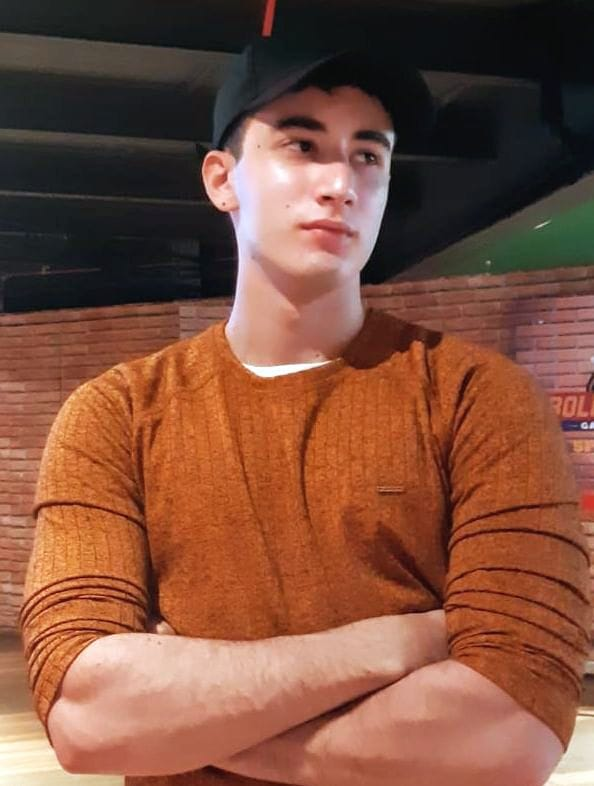

Felipe Ulisses Cavalcanti de Albuquerque ALves

Informações Pessoais
- Email: felipeulissescaa@gmail.com
- Telefone: (81) 981810539
- Cidade: Recife, Pernambuco
Vida Acadêmica
- Curso: Sistemas de Informação
- Instituição: Cesar School
- Ano de conclusão: 2028
Experiência Profissional
- Cargo: Desenvolvedor Flutter
- Empresa: Horizon
- Período: 2024 - now
- Descrição: Arquiteto e Desenvolvedor flutter, sócio fundador do ConectaVital, responsável pelo Front-End.
- Cargo: Desenvolvedor Web PJ
- Empresa: Microcad
- Período: 2024 - now
- Descrição: Desenvolvedor web da microcad responsável pela manutenção e evolução do Topocad2000 e criador do Confromap2000.
Cursos e Certificações
- Responsive web design fundamentals - Google - 2023
Idiomas
- Português - Nativo
- Inglês - Avançado